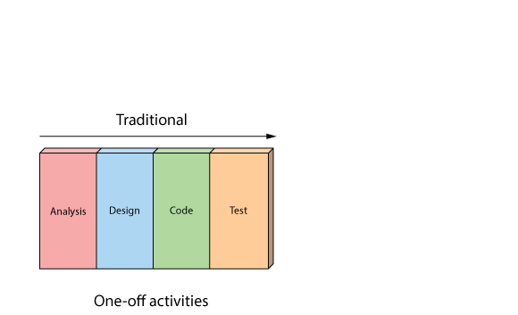
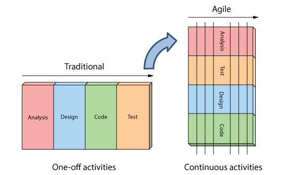

Software Development
as a Craft
Jason Poon
Software Developer, Microsoft
Hi, I'm a
software developer

Programmer vs Developer
- Software development is a craft.
- Programming is only one aspect of software development.
- Knowing how to program is not the same as being able to develop high quality software.
Software Development Process
- work closely with the customer to discover what is required
- design a software architecture that balances simplicity, scalability, performance, and reliability
- implement writing quality code
- unit tests, component tests, integration tests, etc.
Software Development Process

Software Development Process
Software Development Process
Learning the Craft
- learn the fundamentals
- data structures
- algorithms
- apprenticeship
- code reviews
- extreme programming
- mentorship
Lessons I've Learned
Shipping Services
Shrink-Wrapped Software
Examples:
- Windows 10
- Office 365
- DropBox
- Google Docs
What does this mean as a developer?
- Don't be afraid of shipping
- Always shipping
- Impossible to be 100% bug-free
- Everyone is accountable
Lessons I've learned
Things will Fail
Lots of stuff can go wrong
- Reddit effect
- misconfigured machines
- bad configurations
- hard drive failure
- ...etc
Dealing with Failure
- Failover
- Defensive Programming
switch (Orientation) { case Orientation.Horizontal: break; case Orientation.Vertical: break; default: throw new NotSupportedException(); } - Fail fast, fail hard
- KISS
Tools of the Craft
IDE
- Visual Studio
- Visual Studio Code
- Xcode
- Eclipse
- NetBeans
- Sublime
Team Tools
- Visual Studio Online
- GitHub
- Slack
Cloud Hosting
- Microsoft Azure
- Amazon Web Services
- Google Cloud
- Heroku
Hardware
- Raspberry Pi
- Arduino
- Particle Photon
- Windows IoT
App Dev
- Cordova
- React Native
- Xamarin
Web Dev
- Postman
- Fiddler
- NodeJS
- JS Frameworks
Tools of the Craft
IDE
- Visual Studio
- Visual Studio Code
- Xcode
- Eclipse
- NetBeans
- Sublime
Team Tools
- Visual Studio Online
- GitHub
- Slack
Cloud Hosting
- Microsoft Azure
- Amazon Web Services
- Google Cloud
- Heroku
Hardware
- Raspberry Pi
- Arduino
- Particle Photon
- Windows IoT
App Dev
- Cordova
- React Native
- Xamarin
Web Dev
- Postman
- Fiddler
- NodeJS
- JS Frameworks
Tools of the Craft
IDE
- Visual Studio
- Visual Studio Code
- Xcode
- Eclipse
- NetBeans
- Sublime
Team Tools
- Visual Studio Online
- GitHub
- Slack
Cloud Hosting
- Microsoft Azure
- Amazon Web Services
- Google Cloud
- Heroku
Hardware
- Raspberry Pi
- Arduino
- Particle Photon
- Windows IoT
App Dev
- Cordova
- React Native
- Xamarin
Web Dev
- Postman
- Fiddler
- NodeJS
- JS Frameworks
Applying your Craft
-
Continue Schooling
-
Work for Someone
-
Work for Yourself
Stop by and say hello
tomorrow (Oct. 1) at the
Career Fair or
Oct. 6, 7pm @ Dempster 310 for
Meet Microsoft Presentation.